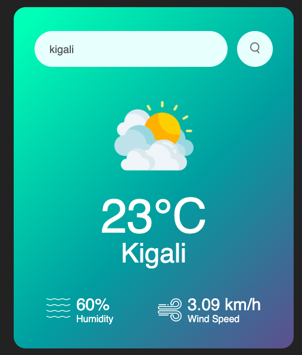

Hello I’m,
Ophelie Bisamaza
Ophelie Bisamaza!

benefits
Captivating projects that have a lasting impression
Web Development
creating websites, developing web applications, implementing responsive designs, building e-commerce platforms, and optimizing site performance for better user experiences.
Several projects have been worked on, gaining experience in web development, particularly with HTML, CSS, JavaScript, and React. These projects have helped in understanding the fundamentals of creating dynamic and responsive websites, from building simple structures to incorporating interactive elements using React for efficient UI development.
Web Development
Purus velit aenean quis habitant eros the a bibendum aenean quis habit aeros who ath bibendum
Read More

UI/UX designer
website designs, mobile app interfaces, user flow optimization, interactive prototypes, and usability testing to enhance digital experiences.
UI/UX design has been central to several projects, emphasizing the creation of intuitive, user-centered interfaces and enhancing overall user experience. The process has involved conducting user research, wireframing, prototyping, and implementing designs that are both functional and visually engaging. A strong focus has been placed on understanding user behavior to craft solutions that improve accessibility and streamline interactions. With attention to detail and a passion for design, each project has aimed to deliver seamless, aesthetically pleasing experiences that align with user needs and project goals.
About me
A Little bio about me
20+ Years Experience In this game, MeansFull Stack Development field.
Junior Full Stack Web Developer who started coding in 2019 when I completed an intensive coding bootcamp at Ubiqum Code Academy (Barcelona). Since then I have worked on various projects and websites.In October 2022 I joined the Full Stack training at the Oxygen Academy (Remote) to solidify my coding knowledge.I am an adventurous and happy person, and through my previous experiences I have learnt how to work in a team and to adapt and deal with challenging situations.My clear goal is to continue learning and to grow as a Web Developer!
My Skills
Crafting projects that inspire to good success
Creating impactful projects requires a combination of creativity, vision, and dedication to achieving meaningful outcomes. These endeavors are not just about meeting objectives; they are about inspiring others to pursue their dreams and reach new heights. By focusing on innovative ideas and practical solutions, such projects demonstrate the power of determination and hard work. They encourage collaboration and build a sense of shared purpose, fostering an environment where individuals and teams can thrive together. Success becomes more than a personal achievement—it transforms into a ripple effect, motivating those who witness it to strive for their best. Such projects are a testament to what is possible when passion meets persistence, leaving a legacy that inspires growth, progress, and continuous improvement.
Education & Experience

Externship - Irembo
Education & Experience
Website Mobile UI/UX Designs
It is a website that serves as a timer and stopwatch, offering features to pause, resume, or restart, making it useful for various time-tracking purposes.
It is a website for managing to-do lists, allowing users to input multiple tasks. Completed tasks can be marked as done, changing their appearance by turning them green and crossing them out. Users can also delete tasks if needed.

This website serves as an image search engine where users can type a few words into the search bar to retrieve images corresponding to their input or related content.
This website serves as a mini calendar that displays only the current date. While it is not very interactive, the date updates automatically every day.

This website serves as a weather app that allows users to search for a city and view the current weather, wind speed in km/h, chance of rain, and other details, including the current temperature in degrees.
Website design template
UI Kit design.